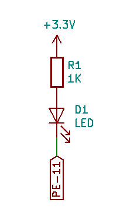
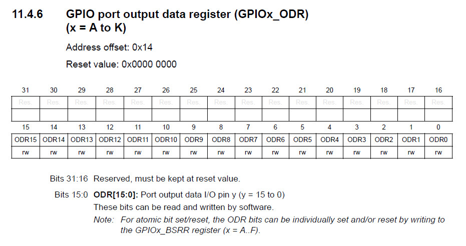
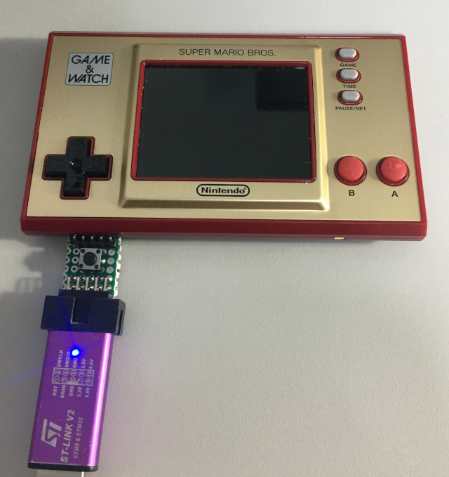
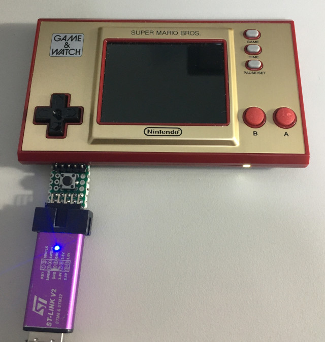

參考資訊：
https://github.com/ghidraninja/game-and-watch-backup
https://www.st.com/resource/en/datasheet/stm32h7b0vb.pdf
https://www.st.com/resource/en/reference_manual/dm00463927-stm32h7a37b3-and-stm32h7b0-value-line-advanced-armbased-32bit-mcus-stmicroelectronics.pdf
LED腳位(PE-11)




.equiv PORTE_BASE, 0x58021000
.equiv GPIO_MODER, 0x0000
.equiv GPIO_ODR, 0x0014
.equiv RCC_BASE, 0x58024400
.equiv RCC_AHB4ENR, 0x0140
.thumb
.cpu cortex-m7
.syntax unified
.global _start
.text
.org 0x0000
_start:
.word 0x20020000
.word reset
.org 0x0100
.thumb_func
reset:
ldr r0, =RCC_BASE
ldr r1, [r0, #RCC_AHB4ENR]
orr r1, #(1 << 4)
str r1, [r0, #RCC_AHB4ENR]
ldr r0, =PORTE_BASE
ldr r1, =(1 << 22)
str r1, [r0, #GPIO_MODER]
ldr r1, =(0 << 11)
str r1, [r0, #GPIO_ODR]
0:
eor r1, #(1 << 11)
str r1, [r0, #GPIO_ODR]
ldr r2, =0x2000000
1:
subs r2, #1
bne 1b
b 0b
.end
main.ld
MEMORY {
ITCMRAM (xrw) : ORIGIN = 0x00000000, LENGTH = 64K
DTCMRAM (xrw) : ORIGIN = 0x20000000, LENGTH = 128K
RAM (xrw) : ORIGIN = 0x24000000, LENGTH = 1024K
FLASH (xr ) : ORIGIN = 0x08000000, LENGTH = 128K
EXTFLASH (xr ) : ORIGIN = 0x90000000, LENGTH = 1024K
}
SECTIONS {
.text : { *(.text*) } > FLASH
.rodata : { *(.rodata*) } > FLASH
.bss : { *(.bss*) } > FLASH
}
main.cfg
source [find interface/stlink.cfg] adapter speed 500 transport select hla_swd source [find target/stm32h7x.cfg] reset_config none
Makefile
all: arm-none-eabi-as -mcpu=cortex-m7 main.s -o main.o arm-none-eabi-ld -T main.ld -o main.elf main.o flash: openocd -f main.cfg -c "init; halt; program main.elf; reset; exit;" clean: rm -rf main.o main.elf
編譯、燒錄
$ make
arm-none-eabi-as -mcpu=cortex-m7 main.s -o main.o
arm-none-eabi-ld -T main.ld -o main.elf main.o
$ make flash
openocd -f main.cfg -c "init; halt; program main.elf; reset; exit;"
Open On-Chip Debugger 0.11.0-rc1+dev-00010-gc69b4deae-dirty (2020-12-27-01:20)
Licensed under GNU GPL v2
For bug reports, read
http://openocd.org/doc/doxygen/bugs.html
Info : The selected transport took over low-level target control. The results might differ compared to plain JTAG/SWD
none separate
Info : clock speed 1800 kHz
Info : STLINK V2J17S4 (API v2) VID:PID 0483:3748
Info : Target voltage: 3.194245
Info : stm32h7x.cpu0: hardware has 8 breakpoints, 4 watchpoints
Info : starting gdb server for stm32h7x.cpu0 on 3333
Info : Listening on port 3333 for gdb connections
target halted due to debug-request, current mode: Thread
xPSR: 0x21000000 pc: 0x08001026 msp: 0x20020000
target halted due to debug-request, current mode: Thread
xPSR: 0x01000000 pc: 0x08001000 msp: 0x20020000
** Programming Started **
Info : Device: STM32H7Ax/7Bx
Info : STM32H7 flash has dual banks
Info : Bank (0) size is 1024 kb, base address is 0x08000000
Info : Padding image section 0 at 0x08001034 with 12 bytes (bank write end alignment)
Warn : Adding extra erase range, 0x08001040 .. 0x08001fff
** Programming Finished **
完成

